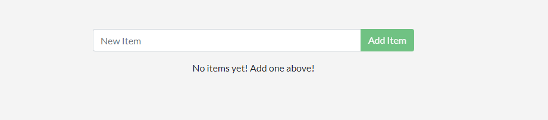
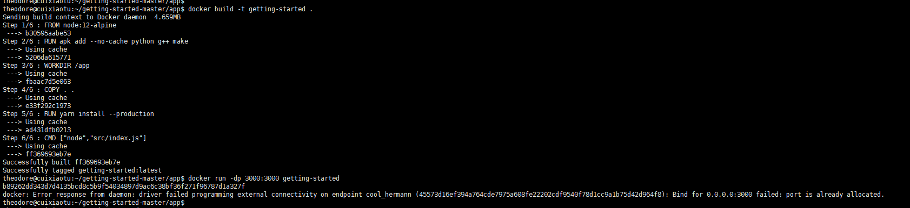
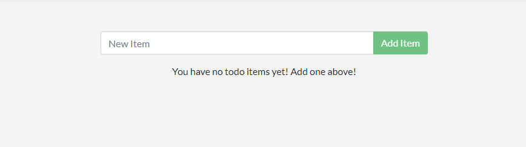
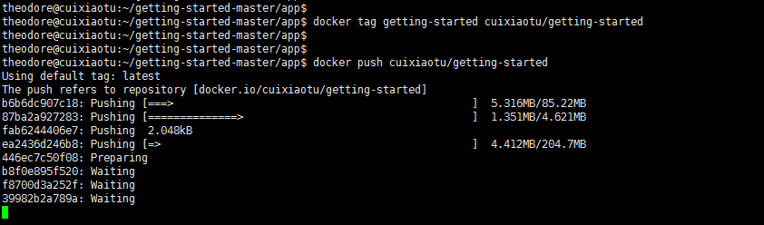

Docker学习4
1.docker实战-构建简单应用
项目准备
按照官网简单的创建一个docker项目。项目地址：https://github.com/docker/getting-started/tree/master/app。
在与package.json同级目录下创建一个Dockerfile文件（无后缀），编写如下代码（以后再解释）：
# syntax=docker/dockerfile:1
FROM node:12-alpine
RUN apk add --no-cache python g++ make
WORKDIR /app
COPY . .
RUN yarn install --production
CMD ["node","src/index.js"]构建镜像
# -t tag 打上标签方便阅读
docker build -t getting-started .后台运行命令
# -d 后台运行
# -p 端口映射
docker run -dp 3000:3000 getting-started此时访问localhost:3000(远程服务器自己换地址)就会出现如下页面：
2.更新项目
在src/static/js/app.js 文件中,更新第56行。
- <p className="text-center">No items yet! Add one above!</p>
+ <p className="text-center">You have no todo items yet! Add one above!</p>重新构建镜像后重启项目
docker build -t getting-started .
docker run -dp 3000:3000 getting-started发现端口被占用

# 关闭之前的容器
docker ps
# 找到之前容器的容器ID
docker stop <the-container-id>
# 移除容器
docker rm <the-container-id>docker run -dp 3000:3000 getting-started此时访问localhost:3000(远程服务器自己换地址)就会出现如下页面：
一个项目的docker构建就是这样了，如何交付呢？
3.上传项目
# 登录自家的仓库地址 热心的运维会配置好这些基本环境（练习省略SERVER 默认使用官方仓库）
docker login SERVER
docker tag getting-started cuixiaotu/getting-started
docker push cuixiaotu/getting-started
如此这般，在其他服务器上可以pull镜像下来，直接运行就可以了。
实际运用中CI 管道中很常见，管道将创建镜像并将其推送到仓库，然后生产/c测试环境可以使用最新版本的镜像。
本博客所有文章除特别声明外，均采用 CC BY-SA 4.0 协议 ，转载请注明出处！